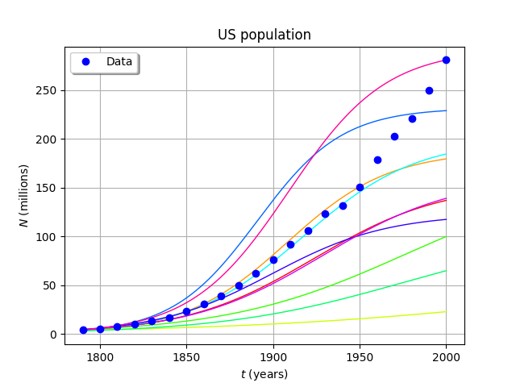

Logistic growth model¶
In the following example we consider the logistic growth model that can be used to modelize the population growth:
With:
- the growth rate
- limiting term
- the population size
- the initial population
- the initial time
- the final time
R. Pearl and L. Reed (1920) determined the parameters to be and for the US population between 1790 and 1910.
We’re going to use the same parameters with even more data until the year 2000.
We will study the influence of the ,  ,
parameters modelized by random variables:
,
parameters modelized by random variables:

In [1]:
from __future__ import print_function
import openturns as ot
from numpy import linspace, exp, maximum
In [2]:
# Some data
ustime=list(range(1790,2001,10))
uspop=[3.9,5.3,7.2,9.6,13.,17.,23.,31.,39., 50.,62.,76.,92.,106.,123.,132.,151.,179., 203.,221.,250.,281.]
In [3]:
# Creation of the input distribution
y0 = 3.9e6
a = 0.03134
b = 1.5887e-10
distY0 = ot.Normal(y0, 0.1 * y0)
distA = ot.Normal(a, 0.3 * a)
distB = ot.Normal(b, 0.3 * b)
distX = ot.ComposedDistribution([distY0, distA, distB])
In [4]:
# The model
class Popu(ot.OpenTURNSPythonPointToFieldFunction):
def __init__(self, t0 = 1790.0, tfinal = 2000.0, nt = 1000):
grid = ot.RegularGrid(t0, (tfinal - t0) / (nt - 1), nt)
super(Popu, self).__init__(3, grid, 1)
self.setInputDescription(['y0', 'a', 'b'])
self.setOutputDescription(['N'])
self.ticks_ = [t[0] for t in grid.getVertices()]
self.phi_ = ot.SymbolicFunction(['t', 'y', 'a', 'b'], ['a*y - b*y^2'])
def _exec(self, X):
y0 = X[0]
a = X[1]
b = X[2]
phi_ab = ot.ParametricFunction(self.phi_, [2, 3], [a, b])
phi_t = ot.ParametricFunction(phi_ab, [0], [0.0])
solver = ot.RungeKutta(phi_t)
initialState = [y0]
values = solver.solve(initialState, self.ticks_)
return values * [1.0e-6]
F = Popu(1790.0, 2000.0, 1000)
popu = ot.PointToFieldFunction(F)
In [5]:
# Sample the model
size = 10
inputSample = distX.getSample(size)
outputSample = popu(inputSample)
In [6]:
# Draw some curves
graph = outputSample.drawMarginal(0)
graph.setTitle('US population')
graph.setXTitle(r'$t$ (years)')
graph.setYTitle(r'$N$ (millions)')
graph.setColors([ot.Drawable.ConvertFromHSV(i * (360.0/size), 1.0, 1.0) for i in range(len(graph.getDrawables()))])
cloud = ot.Cloud(ustime, uspop)
cloud.setPointStyle('circle')
cloud.setLegend('Data')
graph.add(cloud)
graph.setLegendPosition('topleft')
graph
Out[6]:
